Chapter 6 Project 10: Know Your Machine, a Microbenchmark and Roofline Suite
Every performance argument in this book rests on a handful of numbers: how many bytes per second the GPU’s memory delivers, how many FLOP/s its tensor cores sustain in each format, how fast data cross PCIe to the host or to the other GPU, and how many microseconds a kernel launch or a synchronisation costs. Chapter 3 took the first two from a datasheet, then measured them once, and found that they are ceilings rather than promises. This project turns that observation into a method. We build a microbenchmark suite that measures every ceiling of a GPU server with honest statistics, explain how far each one sits below the vendor’s number and why, and then ask the question that makes the numbers useful: does a roofline built from them predict the running time of real kernels well enough to plan with?
This is the first capstone of Part I. It needs only what Chapter 3 taught (the roofline, the execution model, honest timing) and the number formats of Chapter 4; nothing here needs a custom kernel. What it produces is used for the rest of the book: a spec sheet of the machine, measured rather than copied, and a calibrated cost model that later chapters lean on whenever they predict a step time, a decode latency or a transfer. Along the way the measurements turn up four facts about our reference box that no datasheet mentions. The GPU’s clock is a variable, not a constant, and it depends on what ran in the previous half second. Host memory on the wrong NUMA node costs a sixth of the PCIe bandwidth. Peer-to-peer copies between the two GPUs report a bandwidth but deliver wrong data. And a model with no fitted parameters predicts 16 of 20 kernels it was not calibrated on within 20%, failing in ways that each point at a mechanism the roofline leaves out.
A complete reference solution lives in code/projects/p10_machine/reference/. Attempt each milestone before reading it: the point of the project is the judgement that goes into each measurement, and the reference only shows one set of choices.
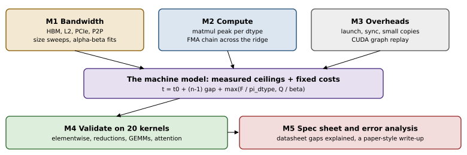
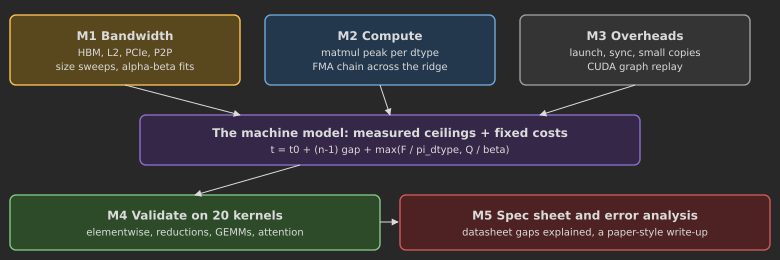
6.1 The project at a glance
6.1.1 Research questions
A microbenchmark suite is a research instrument, and it is only as good as the questions it is built to answer. This project asks three, and a fourth emerged from the answers.
- What are this server’s real ceilings? HBM and L2 bandwidth, host-to-device and device-to-host bandwidth from pageable and from pinned memory, GPU-to-GPU bandwidth, the matmul peak of every data type the tensor cores support, the CUDA-core (SIMT) peak, and the fixed costs of launching, synchronising and copying a few bytes. Each with a spread, not just a number.
- How far below the datasheet are they, and why? Every gap gets a mechanism and, where possible, a measurement that tests the mechanism: packet overhead, a power limit, NUMA placement, too few tiles for the SMs, a missing data check.
- Can a roofline built from the measured ceilings predict real kernels within 20%? Twenty kernels spanning elementwise operations, reductions, GEMMs of training and decoding shapes, and attention, predicted before they are measured.
- Which path should data take between our two GPUs? The question was not in the plan; the peer-to-peer measurement put it there (Section 6.4.5).
6.1.2 Prerequisites
Chapter 3 is required, in particular the roofline and its precise reading (Sections 3.2 and 3.3), the empirical roofline and its pitfalls (Sections 3.5 and 3.6), the asynchronous execution model (Section 3.7) and the measuring rules of Section 3.8. Lab 3 built a first empirical roofline; this project replaces its two probes by a suite. Chapter 4 supplies the formats whose peaks we measure: FP32, TF32 as a compute mode, FP16, BF16 and INT8. Everything else (Nsight counters, custom CUDA or Triton probes, collective benchmarks) appears only as an optional extension, marked with the later chapter that teaches it.
6.1.3 Milestones and acceptance tests
| Milestone | Deliverable | Automated acceptance (CPU unless marked GPU) |
|---|---|---|
| 1 Bandwidth | stream sweeps (copy, read, reduce, write, triad), cold and warm; L2 knee; host and peer transfers with \(\alpha\)–\(\beta\) fits; NUMA placement, verified | byte counts checked against the buffers; NUMA page lookup; knee recovered from synthetic curves; \(\alpha,\beta\) recovered within 10%/5%; spec sheet flags wrong data; GPU: HBM \(\ge\) 75% of datasheet, L2 above HBM, pinned \(\ge 1.2\times\) pageable, peer-copy check agrees with an independent one, staged copy and NCCL correct (two GPUs) |
| 2 Compute | matmul peak per dtype; FMA-chain SIMT ceiling across the ridge; sustained run with clock trace | FLOP counts; datasheet arithmetic; GPU: BF16 \(>\) TF32 \(>\) FP32, BF16 \(\ge\) 70% of datasheet, FMA chain compute-bound |
| 3 Overheads | launch, enqueue, sync, .item(), tiny copies, CUDA graph replay |
timer and clock-resolution checks; GPU: graph \(\ge 1.5\times\) cheaper per kernel than eager |
| 4 Model | the 20-kernel zoo with analytic costs; calibration shapes disjoint from the zoo; parameter-free and fitted predictions; leave-one-out error | zoo FLOPs equal FlopCounterMode; minimum-traffic bytes; calibration and zoo disjoint; fit recovers known parameters within 5–15%; GPU: six uncalibrated kernels within 20% at the configured hit rate |
| 5 Write-up | spec sheet, datasheet gaps, error analysis, results JSON | results schema; spec-sheet rendering; end-to-end CPU dry run of the suite |
The acceptance suite tests what can be tested without a GPU: that the statistics are right, that the cost formulas agree with an independent count, that the model fitting recovers parameters it was given, and that the whole suite runs end to end on a CPU with tiny sizes. The GPU tests run each benchmark for a few seconds and check orderings and fractions that any healthy A100 satisfies. Whether your numbers are right is not a unit test: that is what the write-up argues.
6.1.4 The kit
code/projects/p10_machine/
reference/ the reference solution (a package)
stats.py summaries, bootstrap CI, outliers, steady state, model error metrics
timing.py wall-clock, CUDA-event and burst timers; L2 flush; clock warm-up
bandwidth.py milestone 1 compute.py milestone 2 latency.py milestone 3
kernels.py the 20-kernel zoo model.py milestone 4
report.py, env.py milestone 5 suite.py all milestones in order
collectives.py two-process NCCL correctness and send/receive bandwidth
run.py driver: --config, --milestones, --device, --out
numa_probe.py one host transfer in a fresh process bound to one NUMA node
side.py the side experiments (clock ramp, layouts, baselines, peer checks)
figures.py this chapter's figures from a results file
configs/ smoke.json (about 50 s), full.json (the study), cpu.json (dry run)
results/ smoke_a100_pcie.json (GPU0), smoke_a100_pcie_2gpu.json (an earlier
run with both GPUs: the peer rows), side_experiments.json
test_p10_acceptance.py, Makefile (test, test-gpu, smoke, side, full, figures), README.mdYour implementation is a package with the same module and function names as reference/; the acceptance tests import it from the directory in P10_IMPL:
cd code/projects/p10_machine
make test # CPU acceptance tests on reference/ (seconds)
P10_IMPL=~/my_p10 make test # your package
make test-gpu # brief GPU checks (about 15 s)
make smoke # every benchmark once: about 50 s of GPU time
make side # the side experiments: about 1 min
python run.py --config configs/cpu.json --device cpu --out /tmp/p10.json # no GPU needed| Module | Functions the acceptance tests call |
|---|---|
stats |
summarize, bootstrap_ci, reject_outliers, steady_state_index, error_metrics |
timing |
wall_samples, event_samples, burst_samples, L2Flusher, configure, SETTINGS |
bandwidth |
stream_op, device_bandwidth, find_knee, fit_alpha_beta, log_sizes, numa_pages, node_cpus, host_device_bandwidth, p2p_bandwidth, pattern, staged_bandwidth |
compute |
fma_chain, fma_flops_bytes, fma_rate, matmul_rate, datasheet_tensor_peak |
latency |
clock_resolution, launch_overhead |
kernels |
Kernel, SHAPES, zoo, rmsnorm_eager, attention_naive |
model |
Machine, Params, combine, predict, predict_all, bound, nelder_mead, fit_model, loo_predictions |
report, env, suite |
results_document, validate, spec_sheet_rows, prediction_rows, write, DATASHEETS; collect, versions_line; load_config, run, calibration_overlap |
collectives |
nccl_check (two-GPU test only) |
6.2 The machine under test
Our reference box is a two-socket server with one A100-40GB PCIe card on each socket (Figure 6.2). nvidia-smi topo -m reports the two GPUs as SYS: a path between them crosses PCIe, the first socket’s root complex, the inter-socket link (UPI on these Intel Xeon Gold 6330 processors) and the second root complex. There is no NVLink bridge. Each GPU is local to one NUMA node, and the host memory a transfer reads or writes may sit on either node.
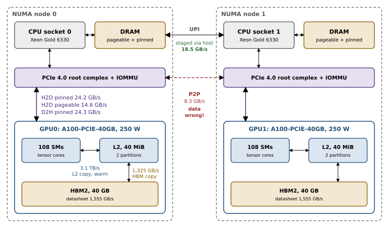
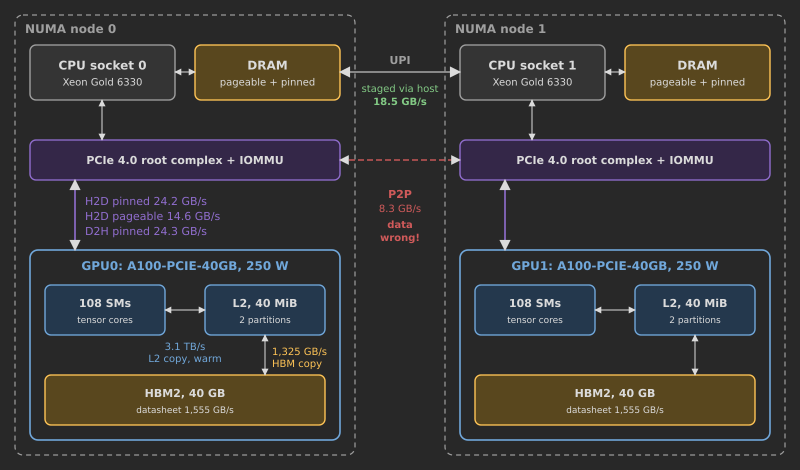
6.2.1 What the datasheet promises, and where the numbers come from
Before measuring anything we derive the vendor’s numbers, because a ceiling whose arithmetic we cannot reproduce is a ceiling we cannot reason about. A peak FLOP rate is a product of three counts: \[\begin{equation} \pi \;=\; N_{\text{SM}} \times f_{\text{clock}} \times \phi, \tag{6.1} \end{equation}\] where \(\phi\) is the number of FLOPs one SM completes per clock in the given format. The A100 has 108 SMs, a boost clock of 1,410 MHz, and four tensor cores per SM, each completing 256 dense FP16 or BF16 fused multiply–adds per clock, so \(\phi_{\text{BF16}} = 4 \times 256 \times 2 = 2{,}048\) and \(\pi_{\text{BF16}} = 108 \times 1.41\times10^9 \times 2{,}048 = 312\) TFLOP/s. TF32 runs at half that rate per tensor core and INT8 at twice it. Without tensor cores, each SM has 64 FP32 lanes doing one FMA per clock, \(\phi = 128\), which gives 19.5 TFLOP/s.
Memory bandwidth is bus width times transfer rate. The A100-40GB has five HBM2 stacks on a 5,120-bit interface, clocked at 1,215 MHz with two transfers per clock: \[\begin{equation} \beta_{\text{HBM}} \;=\; \frac{5{,}120\ \text{bit}}{8\ \text{bit/byte}} \times 2 \times 1.215\times10^{9}\ \text{s}^{-1} \;=\; 1.555\times10^{12}\ \text{B/s}. \tag{6.2} \end{equation}\] PCIe 4.0 runs 16 GT/s per lane with 128b/130b line coding, so an x16 link carries \[\begin{equation} \beta_{\text{PCIe}} \;=\; 16\times10^{9} \times 16 \times \tfrac{128}{130} \,/\, 8 \;=\; 31.5\ \text{GB/s per direction} \tag{6.3} \end{equation}\] of encoded payload-plus-headers. The datasheet’s “64 GB/s” is both directions together. Table 6.3 collects these numbers; the measured column is filled in by the rest of the chapter.
| Ceiling | Datasheet | Derivation | Measured (this chapter) |
|---|---|---|---|
| HBM bandwidth | 1,555 GB/s | 5,120 bit \(\times\) 2.43 GT/s | 1,325 (copy) / 1,498 (write) GB/s |
| L2 capacity | 40 MiB | whitepaper | knee at 24 MiB |
| PCIe 4.0 x16, per direction | 31.5 GB/s | 16 GT/s \(\times\) 16 \(\times\) 128/130 | 23.9 (H2D) / 23.5 (D2H) GB/s, pinned, local node |
| BF16 / FP16 dense | 312 TFLOP/s | 108 \(\times\) 1.41 GHz \(\times\) 2,048 | BF16: 233 burst, 217 sustained |
| TF32 dense | 156 TFLOP/s | \(\phi\) = 1,024 | 116 |
| INT8 dense | 624 TOP/s | \(\phi\) = 4,096 | 417 |
| FP32 (CUDA cores) | 19.5 TFLOP/s | \(\phi\) = 128 | 18.0 (GEMM), 19.0 (FMA chain) |
| board power | 250 W | the binding constraint (Section 6.5.2) |
Napkin Math: Ridge points before measuring anything
The datasheet ridge point in BF16 is \(312/1.555 = 201\) FLOP/byte; for the CUDA-core FP32 path it is \(19.5/1.555 = 12.5\) FLOP/byte (both from datasheet numbers; the measured ones follow in Section 6.5.3). A kernel with intensity between these two numbers is compute-bound if it runs on CUDA cores and memory-bound if the same arithmetic runs on tensor cores: which roof applies is a property of the instruction mix, not only of the kernel’s \(F\) and \(Q\). Across PCIe the ridge collapses: a kernel whose inputs stream from host memory at 31.5 GB/s needs \(312\times10^{12}/31.5\times10^9 \approx 9{,}900\) FLOP per byte to keep the tensor cores busy, which is why everything that must be fast lives in HBM.
6.2.2 Recording the environment
A number without its context cannot be compared with anything, including your own run next month. env.collect() records what the measurements depend on: GPU model, SM count and L2 size from torch.cuda.get_device_properties; driver version, power limit, maximum clocks and PCIe link generation and width from nvidia-smi; the topology matrix and nvidia-smi topo -p2p r/w; whether the driver reports peer access; each GPU’s NUMA node and IOMMU group type, read from sysfs; CPU model; and the versions of Python, PyTorch, CUDA and Triton. Every results file carries this record under versions, and every plot in this chapter is labelled with the hardware it was measured on. Machine-specific constants of the timers (the size of the cache-flush buffer, the clock used to convert a spin of \(x\) μs into cycles) come from the config and the record, not from the code, and report.DATASHEETS carries entries for the A100 PCIe, the H100 SXM and the MI300X, so the suite can run unchanged on another accelerator (on AMD hardware the clock sampler needs amd-smi in place of nvidia-smi).
6.3 Measuring honestly
Section 3.8 gave three rules: warm up, synchronise, repeat and take the median. A microbenchmark suite needs more, because it measures the very costs (launch, synchronisation, clocks, caches) that ordinary benchmarks try to hide, and each rule has a failure mode at the microsecond scale.
6.3.1 Three timers for three questions
timing.py provides three timers (Figure 6.3), and choosing between them is part of designing each measurement.
Wall clock around the call plus a synchronisation (wall_samples, which reuses llmsys.perf.time_fn) measures what a Python caller waits for: launch, execution and synchronisation together. It is the right timer for host-visible costs such as .item() or a 4-byte copy, and the wrong one for a 5 μs kernel, since the synchronisation alone costs 10 μs.
CUDA events recorded on the stream (event_samples) measure device time between two points in the stream. They have a trap. If the queue is empty when the start event is recorded, the GPU timestamps it at once, and the kernel arrives only when the host has finished launching it: the measurement then contains the host’s launch latency. On our box a tiny kernel timed this way takes 19.5 μs. The fix is to keep the queue ahead of the GPU: enqueue a spin kernel of about 100 μs (torch.cuda._sleep) before the start event, so that by the time the GPU reaches the start event, the kernel and the end event are already queued behind it. The same tiny kernel then measures 5.1 μs, and an empty event pair 2.0 μs, the timer’s own floor.
Bursts (burst_samples) time \(n\) calls back to back and divide by \(n\). Eager bursts measure the host’s launch rate when kernels are short; bursts replayed from a CUDA graph remove the host and leave the device’s own gap between kernels, 1.27 μs on our box.
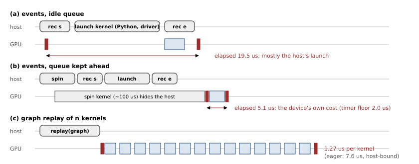
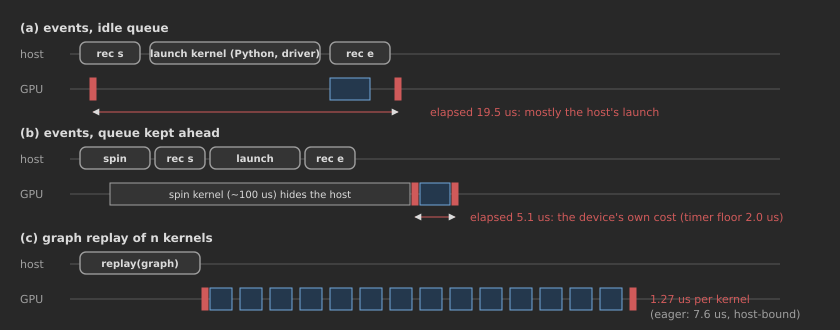
reference/timing.py, simplified).
def event_samples(fn, warmup=3, reps=20, device="cuda", flush=None, ahead_us=0.0):
dev = torch.device(device)
with torch.cuda.device(dev):
for _ in range(warmup): # may compile or autotune: seconds of idle GPU ...
fn()
keep_warm(dev) # ... so ramp the SM clock up after it (see below)
starts = [torch.cuda.Event(enable_timing=True) for _ in range(reps)]
ends = [torch.cuda.Event(enable_timing=True) for _ in range(reps)]
for s, e in zip(starts, ends):
if flush is not None:
flush() # write 2x L2 so the call starts cold
if ahead_us:
torch.cuda._sleep(int(ahead_us * MHZ)) # spin: host gets ahead of the GPU
s.record(); fn(); e.record()
torch.cuda.synchronize(dev)
return [s.elapsed_time(e) * 1e-3 for s, e in zip(starts, ends)] # secondsTwo more details matter at this scale. The L2 flush writes a buffer twice the L2 size before each call (twice the largest on-chip cache in general: 512 MiB on an MI300X with its 256 MB Infinity Cache); without it a 16 MiB copy measures L2, not HBM, the third pitfall of Section 3.8. And event timestamps are quantised: every elapsed time we recorded is a multiple of about 0.5 μs (most are multiples of 1.024 μs), so single-kernel times below 10 μs carry a resolution error of 5–20% that only the median over many repetitions averages out. The host clock, time.perf_counter, resolves about 60 ns.
6.3.2 The clock is a variable
The most consequential discovery of the project came from a number that would not reproduce. The FMA-chain kernel of Section 6.5.3 measured 19.0 TFLOP/s in one development run and 10.4 TFLOP/s in the next, with the same code. The cause is the GPU’s clock management. Without locked clocks (nvidia-smi -lgc needs administrator rights), an idle A100 parks its SM clock at a low frequency, 765 MHz on our box, and raises it to the 1,410 MHz boost only after sustained load. A lone kernel after a pause, or after a few seconds of torch.compile work on the host, runs at about half speed: \(19.5 \times 765/1{,}410 = 10.6\) TFLOP/s, almost exactly the slow measurement. The clock_ramp experiment of side.py (recorded in results/side_experiments.json) fixes the time scale: after 3 s idle, the chain runs at 10.3 TFLOP/s with no prior load or 50 ms of it, and at 19.0–19.1 TFLOP/s after 200 ms or more. In a development run, 200 ms had not been enough and a 300 ms pause after warming had already cost 15%; the ramp is a controller’s decision, not a constant, which is why the suite warms generously.
keep_warm therefore runs a streaming kernel for 250 ms (500 ms after a pause of over a second) before any measurement that follows an idle gap of more than 50 ms, and it runs after the warm-up calls, because warm-up is where compilation and autotuning leave the GPU idle. The cost is small, because back-to-back measurements leave no gap long enough to trigger it; it fires after compilation, after nvidia-smi queries and between milestones. The opposite effect, the clock falling under sustained heavy load, is the subject of Section 6.5.2.
Pitfall: Four ways a benchmark measured the wrong thing in this project
(1) Global switches. TF32 is enabled by a process-wide flag. Our first validation run timed “TF32” GEMMs at FP32 speed because the flag was set in the measurement of milestone 2 and not in the kernel zoo; side.py shows the size of the error, 7.7 ms with the flag off against 1.1 ms with it on for a \(4096^3\) FP32 GEMM. The zoo now sets it inside each call. (2) Layouts that select a different kernel. torch._int_mm with a row-major right operand runs an 8192\(^3\) INT8 GEMM at 60 TOP/s; with the operand stored column-major (the “TN” layout cuBLASLt’s INT8 tensor-core path expects) the same product runs at 410 TOP/s (side.py, int8_layout). (3) Transfers that never happened. The GPU-to-GPU copy of Section 6.4.5 reports 8.3 GB/s and delivers zeros. (4) Memory on the wrong node. In our first runs, pinned host buffers landed on the other socket’s memory and the “PCIe bandwidth” was 20 GB/s instead of 24 (Section 6.4.4). A benchmark that does not check its output measures the speed of whatever the system did instead.
6.3.3 Statistics: what to report and how many samples
Timing distributions are right-skewed (nothing runs faster than the hardware allows, but anything can be preempted), so the suite reports the median with the 10th and 90th percentiles, never the mean alone, following the reporting rules of Hoefler and Belli (2015); the spec sheet prints the p10–p90 range next to every median. stats.summarize adds the median absolute deviation (MAD), a spread estimate that one wild sample cannot move, and the coefficient of variation. For every zoo kernel milestone 4 also records three diagnostics: a bootstrap confidence interval of the median (below); the number of samples reject_outliers would drop, those more than five scaled MADs (\(1.4826\times\)MAD estimates a Gaussian’s standard deviation) from the median; and steady_state_index, how many repetitions the measurement needed before every rolling median stayed within 5% of the second half’s median. The medians themselves are taken over all samples; the diagnostics say whether that was safe. In our run every zoo median has a 95% interval within 1% of it except two (the \(8192^3\) and MLP GEMMs, whose intervals span 3% and 8% because the power limiter acted during the measurement, with steady_state_index of 4 and 20, the latter meaning never settled).
The precision of a median is itself a quantity to report. bootstrap_ci resamples the \(n\) timings with replacement, recomputes the median of each resample, and takes quantiles of those medians; it assumes nothing about the distribution. For planning, the order-statistic interval is enough (Le Boudec, 2010): with \(n\) samples sorted, a 95% confidence interval for the median runs from rank \(j\) to rank \(k\), \[\begin{equation}
j \approx \tfrac{n}{2} - 0.98\sqrt{n}, \qquad k \approx \tfrac{n}{2} + 0.98\sqrt{n} + 1,
\tag{6.4}
\end{equation}\] the normal approximation to the binomial distribution of the number of samples below the median. For \(n = 20\) it gives ranks 5.6 and 15.4; rounding outwards to 5 and 16 is safe, and the exact binomial calculation shows that ranks 6 and 15 already cover the median with probability 95.9%. For timings with a coefficient of variation of 2% (typical of our large kernels), that interval is about \(\pm1\%\) wide; for the 5 μs launch measurements, with their 1 μs quantisation, it is several percent, and the suite uses 200 samples there.
6.4 Milestone 1: the bandwidth suite
6.4.1 Streams through HBM
We follow STREAM’s conventions (McCalpin, 1995): a probe counts only the bytes it must move, and stream_op computes the count from the tensors the kernel reads and writes. Copy (y.copy_(x)) moves \(2n\) bytes for an \(n\)-byte buffer; read views the buffer as 64 rows and sums them element-wise (x.view(64, -1).sum(0)), \(n + n/64\); reduce sums the whole buffer (torch.sum(x)), \(n\); write (x.fill_(1.0)) \(n\); and triad (\(a = b + s\cdot c\), here torch.add(b, x, alpha=0.5, out=a)) \(3n\). The read probe needed care: summing groups of 64 contiguous floats instead reaches only 754 GB/s, a limit of PyTorch’s inner-dimension reduction kernel rather than of the memory. Each probe runs cold, with the L2 flushed before every call, over buffers from 1.5 MiB to 1.5 GiB (sizes of the form \(1.5\times2^k\), so that no probe coincides with a kernel of milestone 4). Figure 6.4 shows the curves and Table 6.4 the plateaus.
| Probe | Plateau (GB/s), p10–p90 | Fraction of 1,555 GB/s | Working set at 90% of the plateau |
|---|---|---|---|
| copy, cold | 1,325 (1,311–1,378) | 85% | about 96 MiB |
| read (64-row sum), cold | 1,326 (1,272–1,351), still rising | 85% | about 390 MiB |
reduce (sum), cold |
1,293 (1,228–1,322), still rising | 83% | about 384 MiB |
write (fill_), cold |
1,498 (1,478–1,508) | 96% | about 96 MiB |
| triad, cold | 1,329 (1,321–1,368) | 85% | about 144 MiB |
| copy, warm (graph burst) | \(\ge\) 3,103 at a 16 MiB working set (about 4,050 gap-corrected) | (L2) |
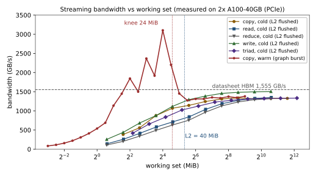
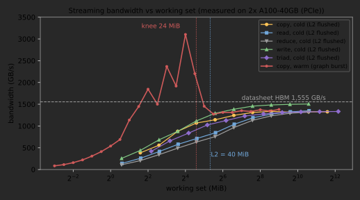
Three features of the cold curves need explaining. First, the slow climb: a 3 MiB copy working set reaches only 384 GB/s. Each call carries a few microseconds of fixed device cost (we measure it in milestone 3), and moving 3 MiB at 1.3 TB/s takes 2.4 μs; the curve is the \(\alpha\)–\(\beta\) shape of (6.5) below, with HBM in place of PCIe. Second, the plateau: no probe reaches the datasheet, and the write-only stream gets closest, 96% against 85% for everything that reads. Our first hypothesis was the DRAM’s read–write turnaround, the penalty paid each time the data bus changes direction, which copy and triad pay and a pure write stream does not. The read probe refutes it: a stream that only reads also stops at 85%. A hypothesis that survives is that reads are latency-bound and writes are not: a read must keep \(\beta\lambda\) bytes outstanding to cover the memory latency \(\lambda\) (Little’s law, Section 3.6), while writes are posted and need no reply. Testing it needs a probe whose loads in flight we control, an extension for ??. The 85% of a copy is in line with the 86–88% that Section 3.5 measured with a different probe. Third, the read and reduce probes climb slowest and are still rising at 1.5 GiB (1,350 and 1,317 GB/s at the largest size): the reduction’s final stage and the launch are fixed costs that only very large buffers amortise.
6.4.2 L2: capacity, bandwidth and a knee in the wrong place
To see the L2 we must stop flushing it and stop paying launch costs. The warm probe captures 50 copies on the same pair of buffers in a CUDA graph and replays it: if the working set (both buffers) fits in L2, every copy after the first is served from cache. The warm curve peaks at 3,103 GB/s, 2.3 times HBM, at a 16 MiB working set, and falls to the HBM plateau beyond 45 MiB. That peak is a lower bound. Each replayed copy also pays the 1.27 μs gap between kernels of milestone 3, about a quarter of its 5.4 μs; removing it gives about 4.05 TB/s, still an estimate, since the gap may overlap the copy’s own start-up. A single long kernel that re-reads an L2-resident buffer would measure L2 bandwidth without the gap, and is the right probe once ?? has been read.
find_knee locates the capacity transition as the size where the curve, past its peak, crosses the geometric mean of the peak and the final plateau: 24 MiB. (The gap correction raises the peak and so moves the threshold up, which would move the knee slightly down; the knee is a capacity estimate good to the sweep’s half-octave spacing, not better. The method also assumes one cache level between the probe and DRAM; on parts with a second large cache, such as the MI300X’s Infinity Cache, the curve has two drops and needs a two-knee fit.) Twenty-four is not forty. The A100 whitepaper describes the L2 as two partitions, each caching the memory accesses of the SMs attached to it, with hardware coherence between them, and NVIDIA’s own tuning guidance (GTC 2021, session S33322) describes the A100’s L2 as a near and a far 20 MB partition; data that SMs on both sides read can occupy space in both. A copy kernel spreads every buffer over all 108 SMs, so a working set that does not fit in one partition starts missing well before 40 MiB. This is a hypothesis consistent with the measurement, not a measurement of it: confirming it needs a probe that pins which SMs touch which addresses, an extension for ??. The warm curve has a second oddity: at the half-octave working sets of 5.7 and 11.3 MiB it runs about 19% slower than at the next smaller power of two, although the buffers are larger. We leave its explanation as an exercise.
6.4.3 Host and device: pinned, pageable, and the \(\alpha\)–\(\beta\) model
A copy between host and device memory is the canonical latency-plus-bandwidth path, and the two-parameter model of Hockney (1994) describes it: \[\begin{equation}
t(n) = \alpha + \frac{n}{\beta}, \qquad
B(n) = \frac{n}{t(n)} = \beta\,\frac{n}{n + n_{1/2}}, \qquad n_{1/2} = \alpha\beta,
\tag{6.5}
\end{equation}\] where \(\alpha\) is the fixed cost of a transfer, \(\beta\) its asymptotic bandwidth, and \(n_{1/2}\) the size at which half of \(\beta\) is reached. Below \(n_{1/2}\) a path is latency-bound; to reach 90% of \(\beta\) a transfer must be \(9\,n_{1/2}\) long. fit_alpha_beta fits the two parameters by least squares weighted by \(1/t\), so that a 4 KiB transfer counts as much as a 256 MiB one:
reference/bandwidth.py).
def fit_alpha_beta(sizes, seconds):
n, t = np.asarray(sizes, float), np.asarray(seconds, float)
w = 1.0 / t # minimise relative, not absolute, error
A = np.stack([np.ones_like(n), n], axis=1) * w[:, None]
(alpha, g), *_ = np.linalg.lstsq(A, t * w, rcond=None)
alpha, beta = max(float(alpha), 0.0), 1.0 / float(g)
return dict(alpha=alpha, beta=beta, n_half=alpha * beta)Pinned (page-locked) host memory can be read and written by the GPU’s DMA engines directly. Pageable memory cannot, because the operating system may move or swap its pages during the transfer, so the driver copies it through a pinned staging buffer: one extra memory copy by the CPU per transfer, partly overlapped with the DMA. Figure 6.5 and Table 6.5 show what that costs.
| Path | Best (GB/s) | Plateau (GB/s) | \(\alpha\) (μs) | \(\beta\) (GB/s) | \(n_{1/2}\) |
|---|---|---|---|---|---|
| H2D, pinned | 24.2 | 23.9 | 6.3 | 23.9 | 151 KB |
| H2D, pageable | 14.6 | 10.1 | 24.2 | 12.1 | 294 KB |
| D2H, pinned | 24.3 | 23.5 | 13.0 | 27.3 | 356 KB |
| D2H, pageable | 14.5 | 8.1 | 23.1 | 10.5 | 242 KB |
| GPU0 \(\to\) GPU1, peer copy\(^\dagger\) | 8.3 (wrong data) | 8.3 | 43.6\(^\ddagger\) | 8.4 | 367 KB |
| GPU0 \(\to\) host \(\to\) GPU1, staged\(^\dagger\) | 18.5 |
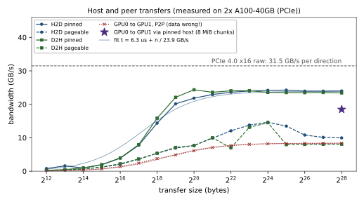
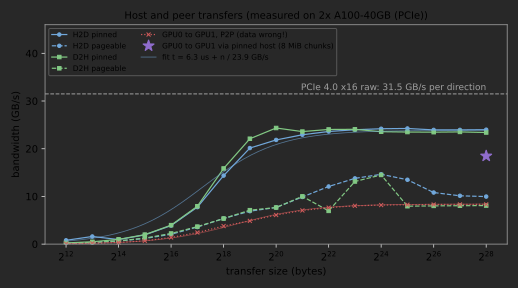
Pinned transfers plateau at 23.5–24 GB/s, 75–76% of the 31.5 GB/s line rate, and three effects account for most of the gap. PCIe moves data in packets (transaction-layer packets), and each carries about 24 bytes of framing, sequence number, header and checksum, so a payload of \(P\) bytes travels at an efficiency of \(P/(P+24)\): 91% for 256-byte payloads, 84% for 128 and 73% for 64. Reads of host memory (the H2D direction, from the GPU’s point of view) return as completions that the root complex may split into 64-byte pieces. Link-level acknowledgements and flow-control credits take a few percent more. With 128-byte effective payloads these give about 26 GB/s; the IOMMU’s address translation and the DMA engine’s own limits plausibly take the rest, but the suite cannot separate them without PCIe counters (an extension). Our first runs disagreed with each other by up to 20% (pinned H2D at 20 or 24 GB/s for the same size); the cause turned out to be where the host buffer lived (Section 6.4.4). With the buffer on the GPU’s own node, three fresh processes in side.py measured 23.7–23.8 GB/s at 16 MiB and 23.5–24.0 GB/s at 256 MiB.
Pageable transfers lose about half the bandwidth and gain 20 μs of fixed cost. If the staging copy and the DMA did not overlap at all, the two stages would add: \[\begin{equation}
\frac{1}{\beta_{\text{pageable}}} \approx \frac{1}{\beta_{\text{pinned}}} + \frac{1}{\beta_{\text{memcpy}}},
\tag{6.6}
\end{equation}\] and with 10.0 and 24.0 GB/s at 256 MiB the implied host copy runs at \(1/(1/10.0 - 1/24.0) = 17.1\) GB/s, a plausible single-threaded memcpy rate on this CPU. The pageable curves also fall past 16 MiB, by 30–40%, which the two-stage model does not explain; the driver’s staging strategy is not documented, and the drop is an open item for the full study. These are the numbers behind the advice of Section 2.6 to set pin_memory=True.
6.4.4 Which socket’s memory?
A host buffer lives in the DRAM of one socket, and a DMA to a GPU on the other socket crosses the inter-socket link. Measuring this needs control over placement, which is harder than it looks. Pinning the measuring thread to a node’s CPUs is not enough: PyTorch fills a new tensor with its pool of worker threads, which may run on either node and touch the pages first, and the caching host allocator hands a later “pinned” request a block it allocated earlier, wherever that was. numa_h2d therefore runs each placement in a fresh process (numa_probe.py) that, before touching any memory, restricts itself to the node’s CPUs, sets a strict memory policy for that node with the set_mempolicy system call (numactl --cpunodebind=N --membind=N does the same, where installed), and uses one intra-op thread. After measuring, it reads /proc/self/numa_maps to report which nodes actually hold the buffer’s pages.
With the 256 MiB buffer verified on GPU0’s node (node 0), pinned H2D runs at 24.0 GB/s; verified on the remote node, at 20.1 GB/s, 16% slower. Pageable transfers barely care (10.4 against 10.2 GB/s): their bottleneck is the CPU’s staging copy, not the link. The suite now allocates the buffers of its host sweep on the GPU’s own node, and records the page placement of every row. Our earlier, unbound runs had put the pinned buffers on node 1, which explains both their 20 GB/s plateau and the run-to-run disagreement.
6.4.5 Between the GPUs: a bandwidth that delivers zeros
The numbers in this section come from the earlier two-GPU smoke run (results/smoke_a100_pcie_2gpu.json), made while both GPUs were free. PyTorch copies a tensor from cuda:0 to cuda:1 with a peer-to-peer DMA when the driver reports peer access, and on our box it does: torch.cuda.can_device_access_peer(0, 1) is True, and nvidia-smi topo -p2p r and w both report OK. The peer copy saturates at 8.3 GB/s with a 44 μs fixed cost (wall clock, including the synchronisation of both devices), and at 16.6 GB/s when both directions run at once. Those numbers would have gone into the spec sheet had p2p_bandwidth not compared the destination with the source afterwards. The comparison fails: the destination holds zeros, for every size from 4 KiB to 256 MiB and in both directions, while the copy reports success. The reference code makes the comparison through host memory, since the device-to-device path is the one under test.
The cause is the platform’s IOMMU, and NVIDIA documents it. env.collect reads each GPU’s IOMMU group from sysfs: both GPUs (groups 6 and 8) are of type DMA-FQ, meaning the IOMMU translates every device address, and the kernel command line does not set iommu=pt, the pass-through mode. NVIDIA’s NCCL troubleshooting guide states that CUDA and the driver do not support PCIe peer-to-peer through an enabled IOMMU on bare-metal Linux, that the IOMMU must be disabled or set to pass-through, and that otherwise transfers can be silently corrupted. A positive nvidia-smi topo -p2p is therefore necessary but not sufficient; only a data check is. (Two separate questions should not be confused here: whether the IOMMU translates peer addresses, the problem on this box, and whether the root complexes forward peer traffic between sockets at all, which only matters once translation is out of the way.) NVIDIA’s simpleP2P CUDA sample checks the copied data for exactly this reason. The consequences are concrete. Any code that moves activations between GPUs with tensor.to("cuda:1") (naive pipeline or model parallelism, for instance) computes silently wrong results on this box, and the suite now prints a warning whenever its peer check fails. NCCL is not affected: its topology detection does not use peer-to-peer DMA across a SYS path, and with NCCL_DEBUG=INFO it reports its channels “via SHM/direct”, shared host memory. In a two-process check made while both GPUs were free (now automated as collectives.nccl_check and a GPU acceptance test that runs when two GPUs are visible), an all-reduce and a send/receive returned the correct values, which is why the distributed labs of Chapter 24 work.
That answers the fourth research question, and suggests the experiment that settles it: route the copy through host memory ourselves. staged_bandwidth splits the tensor into chunks and pipelines them through two pinned buffers: chunk \(i\) goes device-to-host on GPU0’s stream while chunk \(i-1\) goes host-to-device on GPU1’s stream, with events ordering the two:
reference/bandwidth.py).
for i in range(nch):
lo, hi = i * c, min(n, (i + 1) * c)
buf = bufs[i % 2][: hi - lo] # two pinned buffers, used alternately
with torch.cuda.device(da), torch.cuda.stream(sa):
if i >= 2:
sa.wait_event(h2d[i - 2]) # wait until GPU1 has drained this buffer
buf.copy_(x[lo:hi], non_blocking=True) # GPU0 -> host
d2h[i].record(sa)
with torch.cuda.device(db), torch.cuda.stream(sb):
sb.wait_event(d2h[i]) # chunk has landed in host memory
y[lo:hi].copy_(buf, non_blocking=True) # host -> GPU1
h2d[i].record(sb)With 8 MiB chunks the staged copy moves 256 MiB at 18.5 GB/s, correctly, 2.2 times faster than the broken peer copy. The pipeline model predicts it: with \(k\) chunks of \(c\) bytes and two stages each costing \(\alpha_s + c/\beta_s\), the total is \[\begin{equation} T(n, c) \approx \left(\frac{n}{c} + 1\right)\max_s\left(\alpha_s + \frac{c}{\beta_s}\right), \tag{6.7} \end{equation}\] which for \(c = 8\) MiB and the pinned fits of Table 6.5 (the slower stage is H2D: \(6.3\ \mu\text{s} + 8.4\ \text{MB}/23.9\ \text{GB/s} = 0.36\) ms per chunk) gives \(33\times0.36 = 11.8\) ms for 256 MiB, 23 GB/s, against 18.5 GB/s measured in the two-GPU run, whose staging buffers were not placed on a chosen node. Small chunks pay \(\alpha\) too often, large chunks pay the unpipelined first and last chunk; Section 6.14 derives the optimum.
Systems Lens: What this means for two GPUs without NVLink
On this box the fastest correct way we measured to move a tensor between the GPUs runs at 18.5 GB/s, 1.4% of HBM bandwidth. NCCL, which the training code actually uses, is slower: its send/receive of a 256 MiB message, timed by collectives.nccl_check with both GPUs otherwise idle, runs at 15.4 GB/s. Moving one BF16 activation tensor of \(8\times4096\times4096\) elements (256 MiB) costs 14.5 ms with our staged copy and 17.4 ms through NCCL. Split a 4096-wide transformer layer over the two GPUs with tensor parallelism and each GPU computes half of the layer’s forward pass on that batch (\(24d^2\) FLOPs per token, 61 ms at the sustained 217 TFLOP/s, so about 30 ms each), but must all-reduce such a tensor twice per layer, which for two GPUs moves about one tensor per GPU each time: 29 ms of communication (35 ms through NCCL) for 30 ms of compute. Data parallelism, which communicates gradients once per step and overlaps them with backward, fares much better. Chapter 24 builds the cost models; the inputs come from this table, and they are a property of the box, not of the GPUs.
6.5 Milestone 2: compute ceilings
6.5.1 Matmul peaks per data type
Only one PyTorch operation reaches the tensor cores’ peak: a large dense matrix multiplication. We sweep square GEMMs of size 1,536, 3,072 and 6,144 (sizes deliberately different from every GEMM of the milestone-4 zoo, so that the zoo tests the model on shapes it was not calibrated on) in each format the A100 accelerates: FP32 with TF32 disabled, TF32, FP16, BF16, and INT8 through torch._int_mm. Each size is timed over 20 calls with CUDA events after the clock warm-up. FP8 is absent: its tensor-core instructions arrived with the Ada and Hopper generations, and torch._scaled_mm refuses to run on the A100’s compute capability 8.0 (Chapter 4 covers the format itself; an FP8 path for newer GPUs is an extension).
| Format | \(n\) = 1,536 | \(n\) = 3,072 | \(n\) = 6,144 | Best | Datasheet | Fraction |
|---|---|---|---|---|---|---|
| FP32 (CUDA cores) | 17.2 | 18.0 | 17.6 | 18.0 | 19.5 | 92% |
| TF32 | 87.4 | 116.3 | 102.6 | 116.3 | 156 | 75% |
| FP16 | 166.5 | 218.6 | 229.8 | 229.8 | 312 | 74% |
| BF16 | 157.3 | 233.0 | 226.7 | 233.0 | 312 | 75% |
| INT8 (TOP/s) | 208.2 | 353.9 | 416.7 | 416.7 | 624 | 67% |
| BF16, \(8192^3\) for 10 s | 217.2 sustained | 312 | 70% | |||
| same, scaled to 1,410 MHz | 293.8 | 312 | 94% |
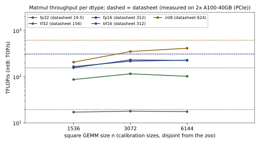
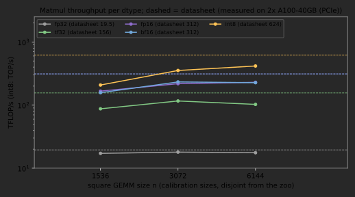
The small sizes are slow for the reasons of Section 3.6: too few output tiles to fill 108 SMs in balanced waves, and a fixed cost that is a visible share of a short kernel. (Tile counts depend on the tile shape cuBLAS picks, which we do not control; with \(128\times128\) tiles an \(n=1{,}024\) GEMM has 64 of them.) The interesting entries are the largest: TF32 and BF16 are already slower at 6,144 than at 3,072. A 6,144 GEMM runs for 2 ms per call, and 25 of them are enough for the power limiter to act. Per-size clock readings cannot show this reliably: the driver refreshes its clock and power readings only about every 100 ms, longer than most of these measurements. A long run can.
6.5.2 Burst and sustained: the power limit
The A100 PCIe card may draw at most 250 W. A GEMM that keeps the tensor cores busy needs more than that at 1,410 MHz, so the power manager lowers the clock until the card fits its budget. Figure 6.7 records it: 10 s of back-to-back BF16 GEMMs of size 8,192, timed in groups of ten with CUDA events, while an independent nvidia-smi process samples clock, power and the active throttle reasons every 50 ms. Each sample carries nvidia-smi’s own timestamp, which env.stop_clock_sampler converts to the benchmark’s clock; counting samples from the moment the sampler was launched would misplace all of them, because the process takes a variable time to start. The first group runs at 258 TFLOP/s with the clock at 1,410 MHz. Within about 150 ms the clock reads 1,020–1,050 MHz, the board briefly draws 268 W, and the throttle reason is “software power cap”; just before one second the controller overcorrects to 870 MHz; from then on the card sits at about 250 W and 1,035–1,050 MHz, and the GEMMs at 217 TFLOP/s.
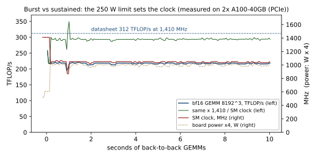
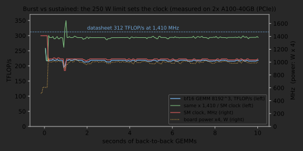
The green curve answers the question the trace raises: does the GEMM lose more or less than the clock? Neither. Dividing every throughput sample by the clock at that moment and scaling to the boost clock gives 293.8 TFLOP/s throughout the steady state, 94% of the 312 TFLOP/s datasheet peak: at this shape the throughput is proportional to the clock, and the whole gap between the sustained 217 TFLOP/s and the datasheet is the clock. Section 3.5 found the same proportionality from the other side: with all-zero inputs, which toggle fewer bits and so draw less power, the same GEMM ran at 295 TFLOP/s with the clock near 1,380 MHz, which scales to about 301 TFLOP/s at 1,410 MHz.
So the A100 PCIe has two BF16 peaks for this GEMM: about 294 TFLOP/s if the boost clock could be held, which it cannot for more than about 100 ms, and 217 TFLOP/s sustained, 70% of the datasheet. Smaller GEMMs are less efficient per clock: the 3,072 GEMM of Table 6.6 reaches 233 TFLOP/s at the boost clock, 75%. Which figure is right depends on the workload: a training step that runs large GEMMs back to back for hours sees the sustained one, a decode step that alternates short GEMMs with memory-bound kernels may never trigger the limiter.
A first version of this analysis paired each throughput sample with the clock sample whose index matched, ignoring the sampler’s start-up delay, and concluded that the throughput falls less than the clock. An exercise at the end asks why that conclusion was unphysical.
6.5.3 A FLOP-bound kernel for the CUDA cores
The CUDA-core ceiling needs a kernel whose arithmetic intensity we control. A chain of fused multiply–adds does it: compile x = 0.999 * x + 0.001, repeated \(k\) times, into one kernel with torch.compile, and each element is read once, updated \(k\) times in registers and written once. The kernel does \(2k\) FLOPs per element and moves 8 bytes (FP32 in and out), so its intensity is \(k/4\) FLOP/byte. The fixed point of the recurrence is 1, so values stay finite for any \(k\), and without fast-math flags no compiler reassociates floating-point FMAs, so all of them execute.
reference/compute.py).
def fma_chain(iters):
def f(x):
for _ in range(iters): # unrolled by torch.compile into one Triton kernel
x = x * 0.999 + 0.001 # one FMA = 2 FLOPs per element per step
return x
return f
f = torch.compile(fma_chain(512), dynamic=False)
x = torch.rand(2**26, device="cuda") # 256 MiB in, 256 MiB out; intensity 512/4 = 128With \(k = 512\) the chain runs at 19.0 TFLOP/s, 97% of the 19.5 TFLOP/s FP32 peak and more than the FP32 GEMM (92%), which spends part of its time on loads. With \(k = 1\) and \(k = 8\) (intensity 0.25 and 2) it streams at 1,358 GB/s, the HBM plateau; at \(k = 64\) (intensity 16, just past the measured SIMT ridge of \(19.0/1.325 = 14\) FLOP/byte, against 12.5 from the datasheet) it reaches 15.1 TFLOP/s and 941 GB/s, below both roofs, as the proposition of Section 3.3 allows near the ridge. Figure 6.8 places these points, and the whole kernel zoo of milestone 4, on the measured roofline.
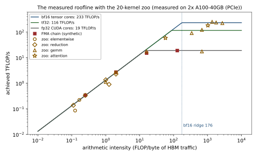
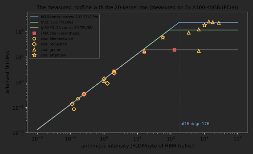
6.6 Milestone 3: the fixed costs
The roofline describes steady streams; everything else on a GPU is a fixed cost, and for small kernels the fixed costs are the kernel. Milestone 3 measures each one with the timer that matches it (Figure 6.9).
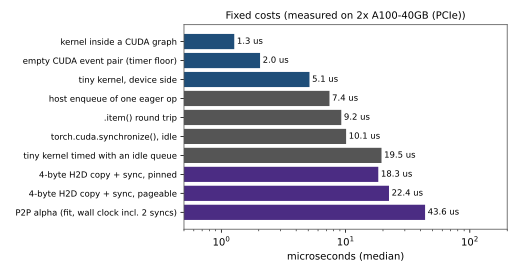
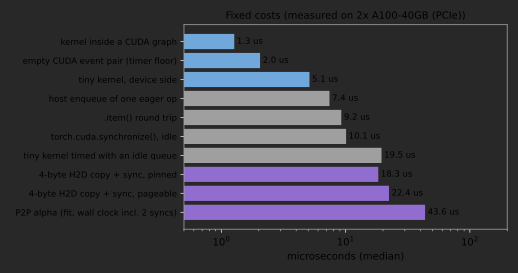
Reading the ladder from the top: a kernel inside a CUDA graph costs the device 1.27 μs; the event pair that every event-timed benchmark wraps around a kernel costs 2.0 μs; the smallest real kernel, timed with the queue ahead, 5.1 μs. Then the host: PyTorch needs 7.4 μs of CPU time to enqueue one eager elementwise operation (argument checking, dispatch, allocation, the driver call), so an eager stream of tiny kernels runs at one per 7.6 μs no matter how small they are. A synchronisation with nothing to wait for costs 10.1 μs, and .item(), a 4-byte copy plus a wait, 9.2 μs: less than the bare synchronisation, plausibly because .item() waits only for its own stream while torch.cuda.synchronize() waits for the whole device. A 4-byte host-to-device copy with synchronisation costs 18.3 μs from pinned memory and 22.4 μs from pageable memory. The peer copy’s 44 μs “fixed cost” (from the two-GPU run, and wall clock with two device synchronisations inside, so not comparable with the device-side numbers) tops the list.
| Kernels per burst | Eager (μs per kernel) | Graph replay (μs per kernel) | Ratio |
|---|---|---|---|
| 10 | 8.70 | 1.74 | 5.0 |
| 100 | 7.55 | 1.32 | 5.7 |
| 1,000 | 7.44 | 1.29 | 5.8 |
Napkin Math: Why serving engines capture the decode step
Section 3.7 estimated that decoding one token of a 0.6B-parameter model launches several hundred kernels. Take 420 (28 layers of 15). Eager, the host enqueues them at 7.4 μs each: 3.1 ms per token. Replayed from a CUDA graph, the device runs them at about 1.3 μs of gap each plus their work: 0.55 ms of gaps. The bandwidth floor, reading 1.2 GB of BF16 weights at 1.33 TB/s, is 0.9 ms. Eager decoding is therefore overhead-bound by a factor of about 3.4 on this box, and a graph brings it within reach of the memory roof. This is the arithmetic behind CUDA graphs in the serving engines of Chapters 45 and 46, with the constants measured rather than assumed.
6.7 Milestone 4: a predictive model and its validation
6.7.1 The model
The machine model combines the measured ceilings with the measured fixed costs. A kernel with \(F\) FLOPs on compute class \(c\) (a matmul format, or “simt” for CUDA-core arithmetic), \(Q\) bytes of compulsory HBM traffic and \(L\) launches is predicted to take \[\begin{equation}
t \;=\; s_0\bigl(t_0 + (L-1)\,g\bigr) \;+\;
\left[\left(\frac{F}{\eta_c\,\pi_c}\right)^{p} + \left(\frac{Q}{\eta_m\,\beta}\right)^{p}\right]^{1/p},
\tag{6.8}
\end{equation}\] where \(\pi_c\) is the measured burst peak of the class, \(\beta\) the measured copy plateau, \(t_0 = 5.1\) μs the event-timed cost of one tiny kernel and \(g = 1.27\) μs the gap per further kernel. None of the calibration probes coincides with a zoo kernel: the GEMM peaks come from sizes 1,536–6,144, the zoo’s square GEMMs are 1,024, 4,096 and 8,192; the copy plateau comes from buffers of \(1.5\times2^k\) bytes, the zoo’s copy is \(2^{28}\) bytes; and \(t_0\) comes from a one-element add_ that the zoo does not contain. suite.calibration_overlap checks this, and the acceptance tests check that it finds nothing, so every error below is out of sample. The bracket is a smooth maximum: \(p\to\infty\) gives the roofline’s \(\max(F/\pi, Q/\beta)\), and \(p = 1\) the sum, the no-overlap upper bound of the proposition in Section 3.3. With \(s_0 = \eta_c = \eta_m = 1\) and \(p = \infty\) the model has no free parameters; that is the honest prediction, made before any zoo kernel is timed. We compare four variants:
- datasheet: datasheet \(\pi\) and \(\beta\), no fixed costs (the model of Chapter 3);
- roofline: measured \(\pi_c\) and \(\beta\), no fixed costs (the empirical roofline of Lab 3);
- roofline + launch: (6.8) with no free parameters;
- fitted, leave-one-out: \(s_0, \eta_c, \eta_m, p\) fitted by minimising the mean squared \(\log(t_{\text{pred}}/t_{\text{meas}})\), each kernel predicted by the model fitted to the other 19. A fitted model’s error on its own training data says nothing; leave-one-out is the cheapest honest alternative.
The fit uses a Nelder–Mead simplex in log-parameters (model.nelder_mead, 40 lines of NumPy), so the suite needs no optimisation library. The acceptance tests check it on synthetic kernels generated from known parameters, which it recovers to within 5% for \(\eta_c\) and \(\eta_m\) and 15% for \(s_0\).
reference/model.py).
def combine(tc, tm, p): # smooth maximum of compute and memory time
if math.isinf(p):
return max(tc, tm)
hi = max(tc, tm)
return 0.0 if hi == 0 else hi * ((tc / hi) ** p + (tm / hi) ** p) ** (1 / p)
def predict(machine, k, params=Params(), launch=True):
t = combine(k.flops / (machine.peak_flops[k.compute] * params.eta_c),
k.bytes / (machine.hbm_bw * params.eta_m), params.p)
if launch:
t += (machine.launch_s + (k.launches - 1) * machine.gap_s) * params.t0_scale
return t6.7.2 The zoo
Twenty kernels span the shapes an LLM runs (Table 6.8). Each comes with costs written from the operation’s definition, not read from a profiler, because the question is whether the definition-level model predicts the machine. FLOPs of the GEMMs and attention are checked in the acceptance tests against PyTorch’s FlopCounterMode. Bytes are the compulsory traffic, except for the two deliberately unfused kernels, whose intermediates are part of their cost. Eager RMSNorm is the instructive one. Written as xf = x.float(); y = (xf * rsqrt(xf.pow(2).mean(-1) + eps)) .to(BF16) * w, converting to FP32 once, it launches eight kernels, and per element of a BF16 input it moves \((2+4)\) bytes to convert to FP32, \((4+4)\) to square, 4 to average, \((4+4)\) to scale, \((4+2)\) to convert back and \((2+2)\) to apply the weight: 36 bytes, against the 4 bytes of the fused kernel torch.compile produces. The prediction is a factor of nine in time, and the measurement gives 9.9.
| Kernel | \(F\) | \(Q\) | \(I\) | \(L\) | Measured (μs) | Roofline + launch | Fitted, LOO |
|---|---|---|---|---|---|---|---|
| copy, BF16, \(2^{27}\) | 0 | 537 MB | 0 | 1 | 394 | +4.1% | +8.8% |
| add, BF16, \(2^{27}\) | 134 M | 805 MB | 0.17 | 1 | 605 | +1.4% | +6.7% |
| GELU (tanh), BF16 | 1.07 G | 537 MB | 2.0 | 1 | 411 | −0.2% | +17.8% |
| scale, FP32, 4 MiB | 1.0 M | 8.4 MB | 0.13 | 1 | 12.3 | −6.8% | +6.5% |
| add, FP32, 16 KiB | 4.1 K | 49 KB | 0.08 | 1 | 6.1 | −16.1% | +16.3% |
| sum, FP32, \(2^{27}\) | 134 M | 537 MB | 0.25 | 1 | 400 | +2.5% | +8.7% |
| softmax, BF16, \(16384\times4096\) | 336 M | 268 MB | 1.25 | 1 | 373 | −44.3% | −40.5% |
| LayerNorm, BF16 | 537 M | 268 MB | 2.0 | 1 | 235 | −11.6% | +3.3% |
| RMSNorm, eager | 268 M | 2.42 GB | 0.11 | 8 | 1,955 | −6.0% | −2.3% |
| RMSNorm, compiled | 268 M | 268 MB | 1.0 | 1 | 198 | +5.1% | +17.5% |
| GEMM BF16 \(1024^3\) | 2.15 G | 6.3 MB | 341 | 1 | 23.6 | −39.1% | −18.5% |
| GEMM BF16 \(4096^3\) | 137 G | 101 MB | 1,365 | 1 | 549 | +8.3% | +19.0% |
| GEMM BF16 \(8192^3\) | 1.10 T | 403 MB | 2,731 | 1 | 4,904 | −3.7% | −4.1% |
| GEMM FP32 \(4096^3\) | 137 G | 201 MB | 683 | 1 | 7,889 | −3.0% | −8.9% |
| GEMM TF32 \(4096^3\) | 137 G | 201 MB | 683 | 1 | 1,127 | +5.3% | +15.1% |
| GEMV BF16, \(8192\times8192\) | 134 M | 134 MB | 1.0 | 1 | 120 | −11.5% | −8.0% |
| GEMM BF16, \(16\times4096\to14336\) | 1.88 G | 118 MB | 15.9 | 1 | 108 | −12.4% | −1.6% |
| GEMM BF16, \(4096\times4096\to14336\) | 481 G | 268 MB | 1,792 | 1 | 2,036 | +1.7% | +6.6% |
| SDPA (flash), \(4\times16\times2048\times128\) | 137 G | 134 MB | 1,024 | 1 | 755 | −21.2% | −13.9% |
| attention, naive, \(T=1024\) | 34.7 G | 604 MB | 57 | 3 | 591 | −21.6% | +5.3% |
6.7.3 Results
| Model | Free parameters | Within 20% | Mean abs. error | Worst | Geometric-mean bias |
|---|---|---|---|---|---|
| datasheet roofline | 0 | 7 / 20 | 32% | −99% | 0.54 |
| measured roofline | 0 | 14 / 20 | 19% | −99% | 0.66 |
| measured roofline + fixed costs | 0 | 16 / 20 | 11% | −44% | 0.90 |
| fitted, leave-one-out | 4 | 19 / 20 | 11% | −40% | 1.00 |
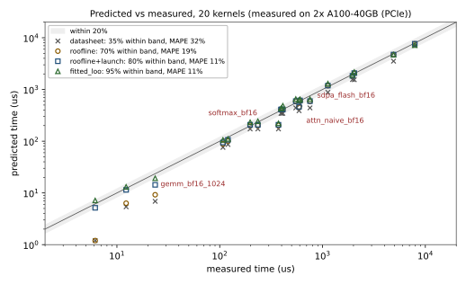
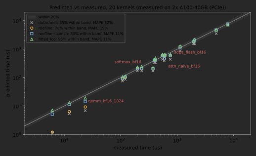
The third research question has a two-part answer (Table 6.9, Figure 6.10). The datasheet roofline is optimistic by nearly a factor of two on average and predicts only seven kernels within 20%; replacing its two numbers with measured ones gets 14, and adding the measured fixed costs gets 16, with a mean absolute error of 11% and no fitted parameter, on kernels it was not calibrated on. A fitted model, evaluated honestly, gets 19. The large streaming kernels (copy, add, GELU, sum, both RMSNorms) land within 6%: for bandwidth-bound work with long, simple streams, compulsory bytes over the measured copy bandwidth is a quantitatively correct model. Streaming kernels that are short (the 4 MiB scale, 7%) or that read with less parallelism (GEMV and the decode GEMM, 12%) do worse. The misses are where the interest lies, and each points at a mechanism the model lacks.
- Softmax (\(-45\%\)) runs at 720 GB/s, half the copy bandwidth. It is not moving more bytes: Section 3.5 counted its traffic with Nsight Compute and found the compulsory amount. The missing half is time spent not streaming: a row-wise reduction with barriers keeps too few loads in flight (Little’s law, Section 3.6). LayerNorm, the same pattern with more arithmetic, loses 12%.
- Flash attention (\(-21\%\)) runs at 182 TFLOP/s, 58% of the A100’s 312 TFLOP/s peak and 78% of our calibrated GEMM peak. Dao (2023) reports 50–73% of the 312 TFLOP/s peak for FlashAttention-2’s forward pass on an A100 (an SXM card, with a higher power limit than ours), and we sit inside that range. The exponentials, the running max and the rescaling are non-matmul instructions a GEMM does not issue, so a GEMM roof is the wrong roof.
- The naive attention (\(-22\%\)) spends a third of its time in a softmax over the score matrix, which inherits the softmax miss above.
- The \(1024^3\) GEMM (\(-39\%\)) has too few output tiles for 108 SMs: wave quantisation, not bandwidth or FLOPs.
- GEMV and the 16-token decode GEMM (\(-12\%\), inside the band) stream their weights at 1.1 TB/s, 83% of the copy bandwidth, the same fraction Section 3.5 measured.
- The 16 KiB add (\(-16\%\), inside the band) is all fixed cost, and a two-input kernel costs a little more than the one-element
add_that defined \(t_0\). - The \(8192^3\) GEMM (\(-4\%\)) is closer than the \(4096^3\) one (\(+8\%\)) partly by coincidence: the calibration peak, 233 TFLOP/s at 3,072, happens to be close to what the power-limited 8,192 GEMM sustains during its 20 calls.
The fitted parameters are as instructive as the errors. Fitted to all 20 kernels, \(\eta_m = 0.97\) (the measured bandwidth was almost right), \(s_0 = 1.24\) (real small kernels cost more than the tiny probe), \(p = 1.0\), the boundary of its range, and \(\eta_c = 1.07\), above one. The last two trade against each other. \(p = 1\) adds the memory time to the compute time of every GEMM, 7% (at 8,192) to 14% (at 4,096) longer, and \(\eta_c > 1\) takes it back by declaring the GEMMs faster than the calibration said; the pair fits the slower small and power-limited GEMMs and the faster mid-sized ones a little better than either parameter alone, and pays with +19% on the 4,096 GEMM. That is not a discovery about overlap. A fitted parameter is a summary of the residuals, not a physical constant, and a write-up should say which is which. The leave-one-out errors also show what fitting cannot fix: softmax remains far outside the band, because no global parameter makes one kernel slow without making its neighbours slow too.
Key Idea: What the roofline is for
With measured ceilings and measured fixed costs, the roofline predicts four in five of a mixed set of kernels it was not calibrated on within 20%, with no free parameters. Where it fails, it fails by under-predicting, and the size of the miss is a measurement of something specific: latency-bound reductions, non-matmul work inside attention, too few tiles, a power-limited clock. That makes the roofline most useful exactly where it is wrong: the ratio of measured time to predicted time is the first number to compute for any kernel worth optimising.
6.8 Milestone 5: the spec sheet and the write-up
6.8.1 The spec sheet
report.render_markdown turns a results file into the machine’s spec sheet; Table 6.10 is the one for our box, from the smoke configuration. It is the table to copy into the front of every later experiment log.
| Quantity | Measured | Datasheet | Fraction | How |
|---|---|---|---|---|
| HBM, copy / read / write | 1,325 / 1,326 / 1,498 GB/s | 1,555 GB/s | 85 / 85 / 96% | cold, three largest sizes |
| L2, copy (warm) | \(\ge\) 3,103 GB/s (about 4,050 gap-corrected) | graph burst, 16 MiB working set | ||
| L2 effective capacity | 24 MiB | 40 MiB | knee of the warm copy | |
| H2D / D2H, pinned, local node | 23.9 / 23.5 GB/s (best 24.2 / 24.3) | 31.5 GB/s | 76 / 75% | plateau |
| H2D, pinned, remote node | 20.1 GB/s | 31.5 GB/s | 64% | 256 MiB, own process |
| H2D / D2H, pageable | 10.1 / 8.1 GB/s (best 14.6 / 14.5) | 31.5 GB/s | 32 / 26% | plateau |
| GPU0 \(\to\) GPU1 | 18.5 GB/s staged; peer copy wrong | 31.5 GB/s | 59% | 8 MiB chunks (two-GPU run) |
| GPU0 \(\to\) GPU1, NCCL send/receive | 15.4 GB/s | 31.5 GB/s | 49% | 256 MiB, two processes |
| BF16 matmul, burst / sustained | 233 / 217 TFLOP/s | 312 TFLOP/s | 75 / 70% | \(3072^3\); \(8192^3\) for 10 s |
| BF16 \(8192^3\) per clock, scaled to 1,410 MHz | 294 TFLOP/s | 312 TFLOP/s | 94% | sustained run |
| FP16 / TF32 / INT8 matmul | 230 / 116 / 417 | 312 / 156 / 624 | 74 / 75 / 67% | best square GEMM |
| FP32: GEMM / FMA chain | 18.0 / 19.0 TFLOP/s | 19.5 TFLOP/s | 92 / 97% | |
| kernel in a CUDA graph / tiny kernel / host enqueue | 1.27 / 5.1 / 7.4 μs | |||
synchronize() / .item() / 4-byte pinned H2D |
10.1 / 9.2 / 18.3 μs | wall clock | ||
| SM clock: idle / boost / sustained GEMM | 765 / 1,410 / 1,035 MHz | 1,410 MHz | nvidia-smi |
6.8.2 Reproducing a published number
Milestone 5 includes a deliberate reproduction of numbers from the microbenchmarking literature, chosen so that the comparison says something even though our GPU is a generation newer than the paper’s. Jia et al. (2018) measured, with a copy probe, sustained global-memory bandwidth at 83.3% of the theoretical figure on a V100 (and 69.6% on a P100), and host transfers over PCIe 3.0 x16 at 12.15 GB/s (H2D) and 12.88 GB/s (D2H), 77% and 82% of the 15.75 GB/s line rate per direction. Table 6.11 puts our numbers next to theirs as fractions of the respective theoretical peaks, which is the only comparison that survives a change of generation.
| Quantity | Published | This suite, A100 PCIe | Agreement |
|---|---|---|---|
| copy bandwidth / theoretical (Jia et al., V100) | 83.3% | 85.2% (1,325 of 1,555 GB/s) | within 2 points |
| H2D, pinned / PCIe line rate (Jia et al., Gen3) | 77% | 76% (Gen4, local node) | within 1 point |
| D2H, pinned / PCIe line rate (Jia et al., Gen3) | 82% | 75% (Gen4, local node) | 7 points lower |
| GPU-to-GPU over PCIe (Jia et al.) | 10.63 GB/s | no correct direct path | not comparable |
| FlashAttention-2 forward / 312 TFLOP/s (Dao, 2023, A100 SXM) | 50–73% | 58% | inside the range |
Two of the ratios reproduce closely across a generation of HBM and of PCIe, which supports treating “about 85% of theoretical for a copy” and “about three quarters of the PCIe line rate for pinned DMA” as properties of the memory and the link rather than of one card. The D2H gap is a finding to chase: our D2H plateau sits 7 points below the paper’s ratio and slightly below our own H2D, the opposite of their ordering. The peer row shows why ratios alone are not enough: the number we would have reported, 8.3 GB/s, compares plausibly with their 10.63 GB/s and is meaningless, because the bytes never arrived.
The headline compute gap is a reproduction of the vendor’s number. Per clock cycle, a BF16 GEMM of a shape that fills the machine runs at 94% of the datasheet’s 312 TFLOP/s (Section 6.5.2); the power limit lowers the sustained clock to 1,035 MHz; and the clock-scaled prediction, \(0.94\times312\times1{,}035/1{,}410 = 215\) TFLOP/s, matches the 217 measured. On the bandwidth side the explanation of the gap is still a hypothesis: the read probe ruled out read–write turnaround as the main cause, and latency-bound reads remain to be tested.
Deeper Dive: Reading the research: Jia, Maggioni, Staiger and Scarpazza (2018), “Dissecting the NVIDIA Volta GPU Architecture via Microbenchmarking”
The cost model, in our notation. The paper treats each level of the memory hierarchy as a resource with a latency \(\lambda_\ell\), a capacity \(C_\ell\) and a throughput \(\beta_\ell\), and measures each with a dedicated probe. Latency comes from pointer chasing: a chain of dependent loads keeps one request in flight, so time per load is \(\lambda_\ell\). Capacity comes from sweeping the chase’s footprint: the latency steps up when the footprint exceeds \(C_\ell\), which is the latency analogue of our bandwidth knee. Throughput comes from many independent streams. The same method, applied to instructions with dependent and independent chains, gives instruction latencies and issue rates, and the paper goes further than any datasheet by decoding the instruction encoding and the register-bank structure of the Volta SM. It also measures the paths off the chip: host transfers and peer-to-peer copies over PCIe and NVLink.
What our code reproduces. Our milestone 1 is the throughput half of the method, run a generation later, and Table 6.11 lists the numbers. The copy-bandwidth ratio (83.3% on the V100, 85.2% on our A100) and the pinned H2D ratio (77% against 76%) reproduce within two points; the D2H ratio does not (82% against 75%). The capacity sweep is where the two cards differ: the paper’s latency probe finds the V100’s L2 at 6,144 KiB, exactly the documented size, while our bandwidth knee sits at 24 MiB on a card documented at 40 MiB, a difference our partitioned-L2 hypothesis has to explain and a pointer-chasing probe could test.
What the evaluation leaves out. The paper runs its benchmarks at the highest graphics clock the card offers, which makes its numbers reproducible but sets aside how clocks behave under a power limit; on our card that behaviour moves the sustained compute ceiling by 25%. It reports transfer bandwidths, but a bandwidth says nothing about whether the data arrived, and on a platform like ours a peer path would have looked healthy. It does not consider where host memory lives, and it characterises rather than predicts: the step from measured ceilings to a validated model of real kernels, our milestone 4, is left to the reader.
6.8.3 The write-up and its rubric
The write-up is a short paper: the research questions; the setup (Table 6.10’s caption is the model for how much context to give); one section per milestone with a figure, a table and an explanation of every gap; the model, its validation and an error analysis that names a mechanism for every miss; and a limitations section. Every number comes from a results JSON produced by run.py and every figure from figures.py, so a reader with the same box can regenerate both.
| Criterion | Weight | Full marks |
|---|---|---|
| Spec sheet | 20% | every ceiling of Table 6.10 with median and spread, repeated across processes, environment recorded |
| Datasheet gaps | 20% | each gap derived from the datasheet arithmetic and explained by a mechanism, with a measurement supporting it |
| Model and validation | 25% | prediction made before timing; parameter-free and fitted variants; leave-one-out or held-out error; bias reported |
| Error analysis | 15% | a mechanism for every kernel outside the band, with evidence (a second measurement, a counter, a citation) |
| Correctness and reproducibility | 10% | outputs of transfers and kernels checked; host-memory placement verified; calibration disjoint from validation; configs, results JSON and figure scripts regenerate everything |
| Writing | 10% | claims proportional to evidence; surprises reported and investigated rather than smoothed over |
6.9 Baselines
A suite is only credible next to the alternatives it replaces. Table 6.13 lists the baselines we compared against on the same box.
| Baseline | BF16 GEMM | Copy bandwidth | What it misses |
|---|---|---|---|
| datasheet | 312 TFLOP/s | 1,555 GB/s | everything below the peak |
raw triton.testing.do_bench, after 2 s idle |
147 TFLOP/s (\(4096^3\)) | 1,357 GB/s | its 25 ms warm-up cannot ramp an idle clock |
llmsys.perf.bench (do_bench after a 0.5 s fixed-time warm-up) |
217 TFLOP/s (\(4096^3\)) | 1,365 GB/s | sustained versus burst not distinguished |
| Lab 3 empirical roofline (best of a sweep) | 215 TFLOP/s (best of 1,024–8,192) | 1,328 GB/s | fixed costs, spread, placement |
| this suite, burst (calibration) | 233 TFLOP/s (\(3072^3\)) | 1,325 GB/s | sustained behaviour (reported separately) |
| this suite, zoo kernel, burst | 250 TFLOP/s (\(4096^3\)) | ||
| this suite, 10 s sustained | 217 TFLOP/s (\(8192^3\)) |
The spread of the first column is the lesson: GEMMs on the same GPU measure 147, 217, 218, 233, 250 or 217 TFLOP/s depending on the shape, on how long the GPU had been busy before and on how long the measurement ran. None of these numbers is wrong; each answers a different question, and a benchmark that does not say which question it answers is not finished. External tools are the other baseline: NVIDIA’s nvbandwidth and the CUDA samples’ bandwidthTest, p2pBandwidthLatencyTest and simpleP2P (which also checks the data) measure the transfer paths independently of PyTorch, and running them is part of the full study.
6.10 Compute budget
| Item | GPU time | Status |
|---|---|---|
| smoke configuration, all milestones | 47 s | measured (results/smoke_a100_pcie.json) |
side experiments (make side) |
about 1.5 min | measured, in two parts |
one full run (configs/full.json: finer sweeps, 50 repetitions, 300 s sustained GEMM) |
about 12 min | estimate |
make full: five repeats on GPU0, one on GPU1 |
about 1.2 h | estimate |
| extension experiments (NUMA, chunk sizes, clocks, external tools) | about 1 h | estimate |
| debugging and reruns | about 0.8 h | estimate |
| total | about 3 GPU-h | estimate, to calibrate |
The project fits on any single NVIDIA GPU; the peer-path experiments need two. On a consumer card the same suite runs unchanged except for the INT8 path; on another datacentre GPU, set datasheet in the config to one of the entries of report.DATASHEETS (A100 PCIe, H100 SXM, MI300X) or add one, and check flush_bytes against its largest cache. On a laptop without a GPU the CPU configuration runs every code path and produces a spec sheet of the CPU, which is a fair warm-up for reasoning about a second kind of machine.
6.11 Extensions
- Latency, not just bandwidth. Pointer-chasing probes for the L1, L2 and HBM latencies and the TLB reach, written as a CUDA kernel (??) or in Triton (Appendix A); then test the L2-partition hypothesis of Section 6.4 by controlling which SMs touch which addresses.
- Counters instead of inferences. Use Nsight Compute (??) to read the DRAM bytes and achieved occupancy of every zoo kernel, and replace the analytic \(Q\) by the counted one: which misses of Table 6.9 disappear?
- A hierarchical roofline. Add an L2 roof (Yang, Kurth and Williams, 2020) to the model and validate it on kernels whose working set fits in L2 (run warm, without the flush).
- A clock-aware model. Make \(\pi_c\) proportional to the clock, as Section 6.5.2 found, and the clock a function of power and recent history; predict the \(8192^3\) GEMM from the trace of Figure 6.7. A sampler on NVML directly (or
amd-smion AMD GPUs) would remove the 100 ms granularity ofnvidia-smi. - The interconnect, properly. Repeat the peer measurements with the IOMMU in pass-through mode (an administrator’s change), measure NCCL all-reduce bus bandwidth across sizes (Chapter 24), and compare with the staged copy.
- Energy. Integrate
nvidia-smipower over each zoo kernel and build an energy roofline (Choi et al., 2013): joules per FLOP and per byte on this card. - Another machine. Run the suite on a different GPU (an H100, an MI300X, a consumer card, an Apple silicon GPU through
mps) and explain which ratios carry over. On the H100, add an FP8 path (torch._scaled_mm) to milestone 2; on the MI300X, extendfind_kneeto two cache levels (L2 and the 256 MB Infinity Cache). - Latency-bound reads. Test the hypothesis of Section 6.4 that reads stop at 85% because too few are in flight: a Triton or CUDA read kernel whose loads per thread are a parameter, swept until the bandwidth stops rising (Appendix A, ??).
6.12 Research frontier
6.12.1 Open problems
Performance prediction for deep-learning kernels is unsolved in a precise sense: analytical models like ours reach 10–20% mean error on simple kernels and degrade on fused and irregular ones, while learned predictors need training data from the very hardware they are meant to predict. Clocks make it harder. On power-limited parts the throughput of a kernel depends on its data, on its neighbours in the schedule and on the temperature, and no published model of a training step treats the clock as a state variable. Variability across nominally identical GPUs is a third gap: large clusters show systematic per-device differences in sustained performance, which microbenchmarks of one card cannot reveal. And interconnect characterisation lags the hardware: peer paths, IOMMU behaviour, NUMA placement and the software that chooses between them change faster than the studies that measure them, as the silent peer-copy failure of this chapter shows.
6.12.2 The works that define the area
- Williams, Waterman and Patterson (2009), Roofline: the two-number machine model and the ceilings beneath it; every chapter of this book uses it.
- McCalpin (1995), STREAM: sustained rather than peak bandwidth, the byte-counting conventions we use, and machine balance as the ratio that matters.
- Hockney (1994): the \(\alpha\)–\(\beta\) (\(r_\infty\), \(n_{1/2}\)) model of communication, still the first model fitted to any transfer path.
- Volkov and Demmel (2008): microbenchmarking GPUs (launch overhead, transfer costs, pipeline latency) to design dense linear algebra; the template for “measure, then model, then tune”.
- Jia et al. (2018): dissecting a GPU generation by microbenchmarks, from cache geometry to instruction encoding; successors have done the same for Turing, Ampere and Hopper (Luo et al., 2024, for Hopper).
- Hoefler and Belli (2015): rules for reporting performance (non-parametric statistics, confidence intervals, variability) that most systems papers still break.
- Yang, Kurth and Williams (2020): the hierarchical roofline for GPUs, one roof per memory level and per instruction class.
- Li et al. (2020): a systematic evaluation of GPU interconnects (PCIe, NVLink, NVSwitch, GPUDirect) and of how topology shapes peer-to-peer performance.
- Yu et al. (2021), Habitat: predicting a training step’s time on one GPU from measurements on another, by scaling kernels with ratios of measured ceilings plus learned models for the rest.
- Sinha et al. (2022): performance variability across thousands of GPUs of one type in production clusters, driven largely by power and thermal management.
6.12.3 Assumptions that are likely to break
The roofline assumes one compute roof per format; Hopper and Blackwell add asynchronous tensor memory accelerators, distributed shared memory across SMs and sub-byte formats whose throughput depends on block scaling, so the “roof” becomes a function of how a kernel is written. It assumes a fixed clock; every recent datacentre part is power-limited, and the burst–sustained gap we measured will widen as tensor-core throughput grows faster than power budgets. It assumes one memory; unified CPU–GPU memory over NVLink-C2C (Grace Hopper) blurs the line between HBM and host transfers that our milestone 1 draws. And it assumes that a transfer that reports success has happened, an assumption our box has already broken.
6.12.4 How to recognise the next variant
New papers in this area vary along a few axes; placing a paper on them takes a minute. What is measured: throughput, latency, capacity, energy, variability, or correctness of a path. At which level: instruction, kernel, operator, step, job. With what model: analytical (roofline-style ceilings), empirical tables, learned predictors, or simulation. Under which conditions: burst or sustained, locked or free clocks, one device or a fleet, synthetic or real workloads. How validated: held-out kernels or hardware, or only in-sample fit. A paper that reports a new peak without its conditions, or a predictor without held-out error, has told you less than it seems to.
6.13 Summary
- A microbenchmark suite answers research questions: what the ceilings are, why they sit where they do, and whether they predict real work. Each needs its own timer: wall clock for host round trips, CUDA events with a flushed L2 and a queue kept ahead for device time, graph-replayed bursts for per-kernel gaps.
- On our 2x A100-40GB PCIe box: HBM 1,325 GB/s for a copy or a read and 1,498 GB/s for a write (85% and 96% of 1,555); L2 at least 3.1 TB/s with an effective capacity near 24 MiB; pinned PCIe about 24 GB/s from the GPU’s own NUMA node and 20 GB/s from the other, pageable less than half; BF16 233 TFLOP/s in bursts and 217 TFLOP/s sustained; FP32 19.0 TFLOP/s on CUDA cores; 1.3 μs per kernel in a CUDA graph against 7.4 μs of host time per eager launch.
- The clock is a variable: idle 765 MHz, boost 1,410 MHz after a fraction of a second of load, and about 1,035 MHz under sustained GEMMs at the 250 W limit, where GEMM throughput is proportional to the clock. A benchmark that does not control the clock measures the GPU’s recent history.
- Peer-to-peer copies between our GPUs report 8.3 GB/s and deliver zeros, because the IOMMU translates peer addresses, an unsupported configuration; a pipelined copy through pinned host memory runs at 18.5 GB/s and is correct. Check the output of every benchmark, and the placement of every buffer.
- With measured ceilings and fixed costs and no fitted parameters, the roofline predicts 16 of 20 kernels it was not calibrated on within 20% (mean error 11%); the misses (softmax, flash attention, the attention that materialises its scores, a small GEMM) each name a mechanism the model lacks.
6.14 Exercises
Exercise 6.1 (Peaks from first principles).
The H100 SXM has 132 SMs and a dense BF16 peak of 989 TFLOP/s, with 4,096 dense BF16 FLOPs per SM per clock. Use (6.1) to compute the clock the datasheet assumes. On a box you can access, compare it with the maximum clock nvidia-smi -q -d CLOCK reports, and predict the burst-to-sustained ratio from the power limit.
Exercise 6.2 (Half-bandwidth sizes).
From the pinned H2D fit of Table 6.5 (\(\alpha = 6.3\) μs, \(\beta = 23.9\) GB/s), compute \(n_{1/2}\) and the transfer size that reaches 90% of \(\beta\). A data loader sends one batch of \(8\times2048\) int64 token ids per step. What bandwidth does it see, and would sending the ids as int32 change the transfer time noticeably?
Exercise 6.3 (Pageable as two stages).
Using (6.6) and the D2H plateaus of Table 6.5 (pinned 23.5, pageable 8.1 GB/s), infer the host copy bandwidth. Is it consistent with the H2D estimate of Section 6.4? Propose a measurement that tests the two-stage model directly.
Exercise 6.4 (The best chunk size).
For the staged copy, model each chunk’s stage time as \(\alpha + c/\beta\) with the pinned D2H and H2D fits of Table 6.5, and minimise (6.7) over \(c\) for \(n = 256\) MiB. Then measure staged_bandwidth for chunks of 1, 4, 16 and 64 MiB and compare.
Exercise 6.5 (How many repetitions?).
A kernel’s timings have a coefficient of variation of 3%. Using (6.4) and a Gaussian approximation, how many samples give a 95% confidence interval for the median no wider than \(\pm1\%\)? Check your answer with stats.bootstrap_ci on synthetic log-normal samples.
Exercise 6.6 (Overhead-bound decoding).
A decode step of Qwen3-0.6B launches about 420 kernels and reads 1.2 GB of BF16 weights. Using the fixed costs of Figure 6.9, predict the step time eager, eager with half the kernels fused away, and replayed from a CUDA graph. At what batch size does the eager step stop being overhead-bound on this box?
Exercise 6.7 (The sawtooth).
In Figure 6.4 the warm copy runs about 19% slower at the half-octave working sets of 5.7 and 11.3 MiB than at the next smaller power of two (in an earlier run, 2.8 MiB did too). Propose two mechanisms (one about how the copy kernel divides work among SMs, one about how addresses map to L2 slices or partitions), and design a sweep with the suite that distinguishes them.
Exercise 6.8 (Two clocks, one GEMM, one mistake).
A first analysis of the sustained run paired throughput samples with clock samples by index, ignoring the sampler’s start-up delay, and obtained a burst of 261 TFLOP/s at 1,410 MHz and a sustained 217 TFLOP/s at 1,035 MHz. Fit \(t = W_{\text{SM}}/f + W_{\text{mem}}\) (a part that scales with the SM clock \(f\) and a part that does not) to these two points for the \(8192^3\) BF16 GEMM, and predict the throughput at 765 MHz. Compare the prediction with the clock-scaled peak \(312\times765/1{,}410\) TFLOP/s and explain why the fit must be wrong. Which assumption about the “burst” point fails, and how does the correctly timestamped trace of Figure 6.7 settle the question?
Exercise 6.9 (Research: Habitat on one box).
Habitat (Yu et al., 2021) predicts kernel times on a target GPU from measurements on an origin GPU by scaling each kernel with the ratio of the two GPUs’ ceilings. Our box offers two “GPUs” with different ceilings: the A100 at its boost clock and the same A100 at its power-limited clock. Predict, then measure, the zoo’s times in the power-limited state from their burst times, scaling compute-bound kernels by the clock ratio and memory-bound ones not at all. Which kernels does the rule mispredict, and why?
Exercise 6.10 (Research: predict the spec sheet of another GPU).
Before running the suite on a different GPU (an H100, an L4, a consumer card), write down your predicted spec sheet: datasheet numbers times the fractions measured here, with the burst–sustained gap scaled by the ratio of tensor throughput to power limit. Then measure. Which fractions transfer, which do not, and which part of the model of (6.8) needs a new term?
Exercise 6.11 (A test that would have caught it).
Write a pytest test, suitable for the CI of a pipeline-parallel training framework, that would have caught the silent peer-copy failure of Section 6.4.5 on a new machine before any training run. Why does NCCL not need such a test, and what in its design makes it robust to this failure?